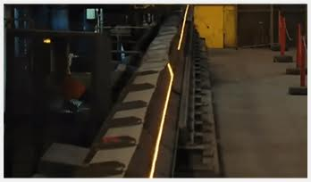

1 IMPORTANT POINTS
Q What is m sand?
A M sand is artificially made sand used in the construction as a Eco friendly alternative to the natural river sand.

Q How is m sand manufactured?
A M sand is manufactured in following three steps
STEP 1 Steel is recycled.

STEP 2 Iron billets are produced using recycled steel.

STEP 3 Billets are passed through rollers of decreasing diameter.

Q What are the advantages of using M sand?
A
1.AbundantSupplyandEcoFriendlyNature
2.Lesser Impurities
3.Excellent Strength and Better Utility
4..Cheaper in Nature
Q How M sand is sold
A M sand is sold in the market in the unit of Metric ton.One ton concrete M sand equals to 21. 5 cubic feet & one ton plastering M sand equals to 22 cubic feet.
Q How M sand is delivered?
A
Generally,M Sand is delivered in two types of truck loads
-
20 ton truck load delivered in 6 wheeler
-
30 ton truck load delivered in 10 wheeler
Q What is the difference between plastering and concrete M sand?
A
| Concrete M sand | Plastering M sand | |
|---|---|---|
| Uses | used for concreting purposes; granule thickness limit of 4.75mm | used for plastering walls and doing the brick work. granule thickness limit of 2.38mm. |
2 TYPES
Q How can one classify the sand used in the construction?
A Property wise classification and size wise classification
| Property wise Classification | |||||
|---|---|---|---|---|---|
| FE 415 | FE 500 | FE 500D | FE 550D | FE 600D | |
| Stress Capacity | 415 Megapascal | 500 Megapascal | 500 Megapascal | 550 Megapascal | 600 Megapascal |
| Normal Use | Domestic Construction(G+2) | High Rise Buildings | High Rise Buildings in Earthquake prone zone | High Rise Buildings in Earthquake prone zone | Flyovers, dams, mega projects |
FE 500 is the most common type of TMT used in the market.
| Size wise Classification | ||||||
|---|---|---|---|---|---|---|
| 8mm | 10mm | 12mm | 16mm | 20mm | 25mm | 32mm |

3 BRANDS
There are companies like Bharathi, Besto, Robo, Thriveni which manufacture branded M sand in the market. There are multiple options of local manufacturers to buy from.
4 STORAGE AND HANDLING
Q How to store sand on site?
A Sand should be placed on a dry patch of ground and sand stacks should not be mixed with mud, clay or soil.
5 COSTING AND ESTIMATION
Q What is the cost of sand in the market?
A
| Type of sand | Tentative price |
| River sand | About 2800 per ton |
| Concrete M sand | About 100 per ton |
| Plastering M sand | About 1200 per ton |
Q How much sand is required to construct a house?
A Enter your built up area and no. of stories in the following form and we will calculate the tentative amount of TMT required.
Enter per ton price of TMT
Enter per ton price of TMT
Amount of Concrete M sand 0.00 ton
Amount of Plastering M sand required 0.00 ton